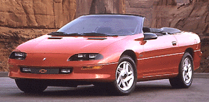

spec
width 1890mm
総排気量 5727cc
エンジン出力 275PS/5,000rpm(SAE)
最大トルク 44.9kgm/rpm(SAE)
3400ccに試乗したら意外とエンジン音が騒々しいという感じでいま一つで、パワーもいま一歩。これなら１世代前の5000ccの方が楽しいと思い、5700ccにしました。買い換え前の車との変化を付けるためカブリオレを買いましたが、思った以上に快適です。ユーノスロードスターが爆発的に売れたというのもうなづけます。
基本的にちょっと高性能な乗用車として使っているんでおしまい。
更新日：Nov/23/96